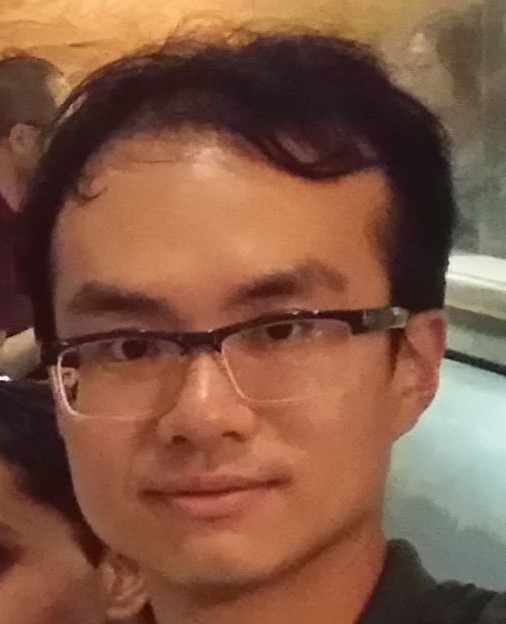
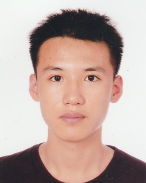
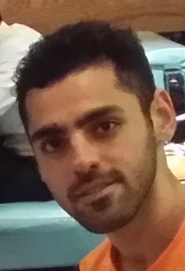
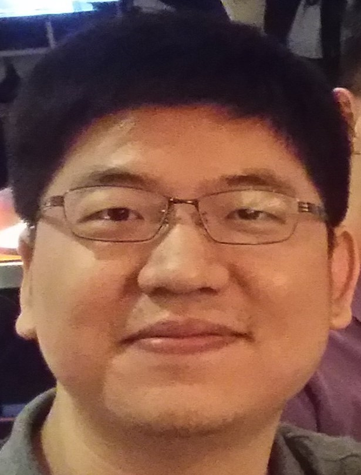
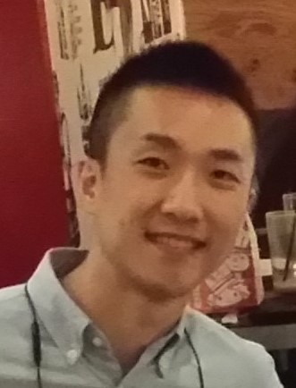
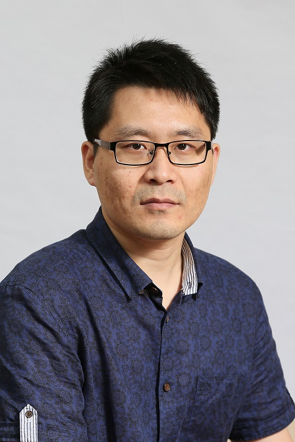
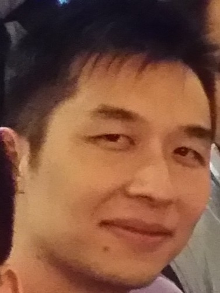

RESEARCH GROUP
Current PhD Students
|  | Wai Ho Ng "David" | On Gaussian Extremizers for the Capacity Region of the Gaussian Interference Channel | PhD 2021 (expected) | Website |
|  | Lau Chin Wa "Ken" | TBD | PhD 2024-25 (expected) |
| Yannan Wang "Dustin" | Thesis: Optimisation of Some Non-convex Functionals Arising in Information Theory [pdf] | PhD 2021 | Associate, Goldman Sachs (HK), Personal Website | |
|  | Mehdi Yazdanpanah "Babak" | Thesis: Sub-optimality of achievable regions in two fundamental network information theory settings [pdf] | PhD 2019 | Associate, Goldman Sachs (HK) |
|  | Sida Liu | Thesis: Genie-based outer bounds for interference channels [pdf] | PhD 2016 | Bank of China, HK |
|  | Lingxiao Xia | Thesis: On tightness of several achievable rate regions in network information theory [pdf] | PhD 2016 | Co-founder and CTO of Portcast) |
|  | Yanlin Geng | Thesis: On the evaluation of Marton's inner bound for binary input broadcast channels [pdf] | PhD 2013 | Professor, Xidian University |
|  | Zizhou Wang "Vincent" | Thesis: On the tightness of inner and outer bounds for broadcast channels with three or more receivers [pdf] | PhD 2010 | Researcher, ASTRI |
A picture with my doctoral
students taken in December 2016.
Prospective students : I am always interested in working with good students, primarily those having strong mathematical reasoning skills.
{kind=link}